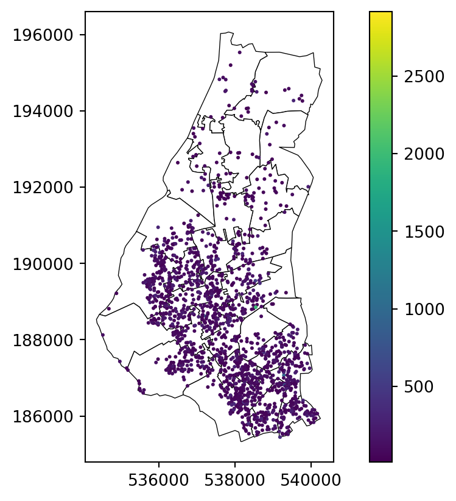
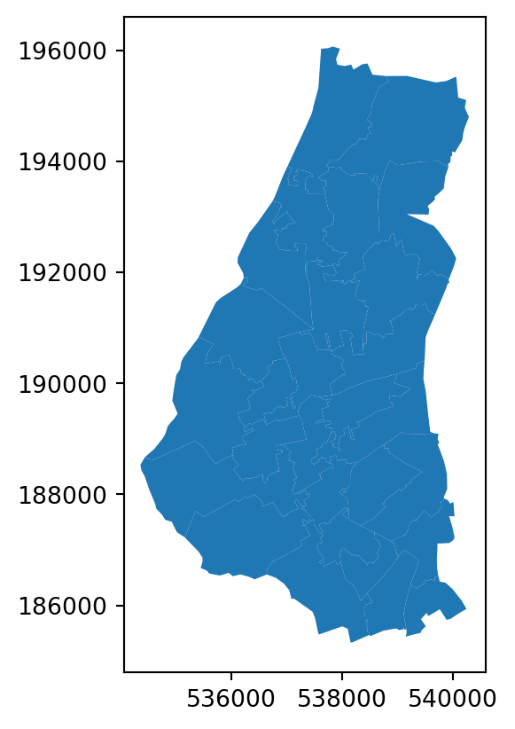
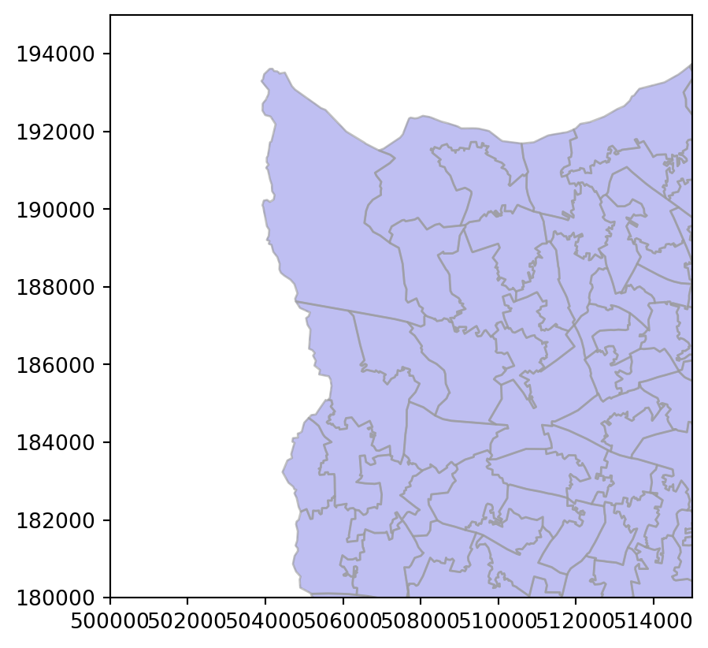
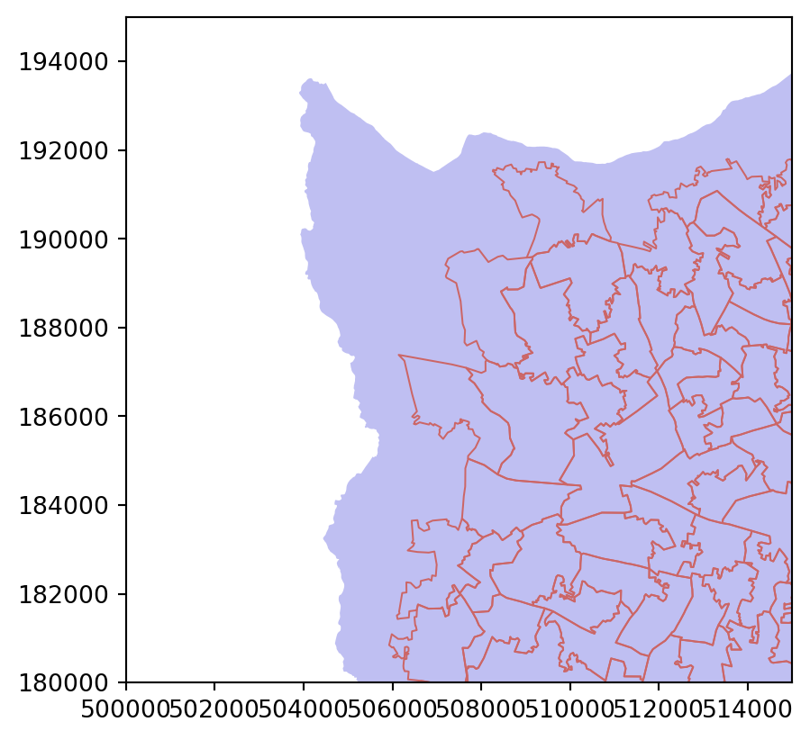
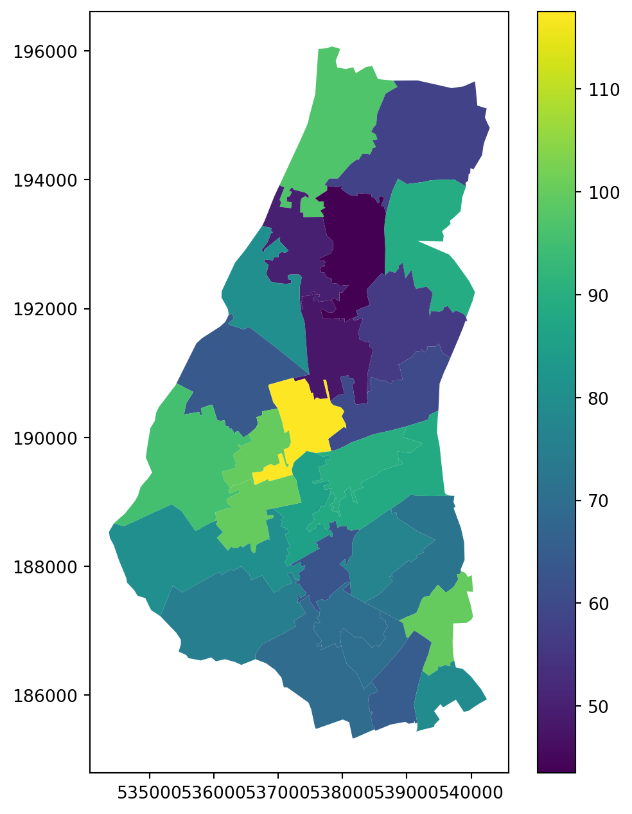

host = 'http://orca.casa.ucl.ac.uk'
path = '~jreades/data'
ymd = '2023-09-06'Practical 8: Selecting Data
Selecting & Joining Data
| Complete | Part 1: Foundations | Part 2: Data | Part 3: Analysis | |
|---|---|---|---|---|
| 90% | ▓▓▓▓▓▓▓▓ | ▓▓▓▓▓▓ | ▓▓▓░░░ | 8/10 |
Important
This practical focusses on two key bits of implementation: visualisation and data linkage! You will have seen quite a bit of each of these across the preceding three to four weeks, but they were picked up in an ad-hoc way, here we try to systematise things a bit.
🔗 Connections
Here we’re trying to tidy up the loose ends. You’ve already worked with basic data visualisations in Seaborn and Matplotlib (including (geo)panda’s plot function), but we want you to have a better sense of how that works as part of a coherent – if altogether rather complex and overwhelming – approach to managing a data visualisation. You’ve also already seen examples of joins and spatial joins before but, again, we just want to review them more formally now.
Preamble
import os
import numpy as np
import pandas as pd
import geopandas as gpd
import seaborn as sns
import matplotlib.cm as cm
import matplotlib.pyplot as pltimport os
from requests import get
from urllib.parse import urlparse
def cache_data(src:str, dest:str) -> str:
"""Downloads and caches a remote file locally.
The function sits between the 'read' step of a pandas or geopandas
data frame and downloading the file from a remote location. The idea
is that it will save it locally so that you don't need to remember to
do so yourself. Subsequent re-reads of the file will return instantly
rather than downloading the entire file for a second or n-th itme.
Parameters
----------
src : str
The remote *source* for the file, any valid URL should work.
dest : str
The *destination* location to save the downloaded file.
Returns
-------
str
A string representing the local location of the file.
"""
url = urlparse(src) # We assume that this is some kind of valid URL
fn = os.path.split(url.path)[-1] # Extract the filename
dfn = os.path.join(dest,fn) # Destination filename
# Check if dest+filename does *not* exist --
# that would mean we have to download it!
if not os.path.isfile(dfn) or os.path.getsize(dfn) < 1:
print(f"{dfn} not found, downloading!")
# Convert the path back into a list (without)
# the filename -- we need to check that directories
# exist first.
path = os.path.split(dest)
# Create any missing directories in dest(ination) path
# -- os.path.join is the reverse of split (as you saw above)
# but it doesn't work with lists... so I had to google how
# to use the 'splat' operator! os.makedirs creates missing
# directories in a path automatically.
if len(path) >= 1 and path[0] != '':
os.makedirs(os.path.join(*path), exist_ok=True)
# Download and write the file
with open(dfn, "wb") as file:
response = get(src)
file.write(response.content)
print('Done downloading...')
else:
print(f"Found {dfn} locally!")
return dfnddir = os.path.join('data','geo') # destination directory
pqt = cache_data(f'{host}/{path}/{ymd}-listings.geoparquet', ddir)Found data/geo/2023-09-06-listings.geoparquet locally!Selecting Data
In Pandas
Recap: A First Query
pd.read_parquet(f'{pqt}').head(3) | listing_url | last_scraped | name | description | host_id | host_name | host_since | host_location | host_is_superhost | host_listings_count | ... | price | minimum_nights | maximum_nights | availability_365 | number_of_reviews | first_review | last_review | review_scores_rating | reviews_per_month | geometry | |
|---|---|---|---|---|---|---|---|---|---|---|---|---|---|---|---|---|---|---|---|---|---|
| id | |||||||||||||||||||||
| 92644 | https://www.airbnb.com/rooms/92644 | 2023-09-06 | Rental unit in Earlsfield · ★4.57 · 1 bedroom ... | <b>The space</b><br />Hi everyone! I have 2 ro... | 498201 | Dee Dee | 2011-04-10 | London, United Kingdom | False | 1 | ... | 42.0 | 2 | 730 | 217 | 216 | 2011-06-21 | 2022-10-29 | 4.57 | 1.45 | b'\x01\x01\x00\x00\x00\xeax\xcc@e\xfc\xc7\xbf\... |
| 93015 | https://www.airbnb.com/rooms/93015 | 2023-09-06 | Rental unit in Hammersmith · ★4.82 · 2 bedroom... | Gorgeous 2 bed ground floor apartment with per... | 499704 | Sarah | 2011-04-11 | London, United Kingdom | False | 1 | ... | 175.0 | 5 | 240 | 40 | 38 | 2012-02-01 | 2022-09-30 | 4.82 | 0.27 | b'\x01\x01\x00\x00\x00\r\xabx#\xf3\xc8\xcb\xbf... |
| 13913 | https://www.airbnb.com/rooms/13913 | 2023-09-06 | Rental unit in Islington · ★4.80 · 1 bedroom ·... | My bright double bedroom with a large window h... | 54730 | Alina | 2009-11-16 | London, United Kingdom | False | 3 | ... | 79.0 | 1 | 29 | 360 | 41 | 2010-08-18 | 2022-12-11 | 4.80 | 0.26 | b'\x01\x01\x00\x00\x00\xeeZB>\xe8\xd9\xbc\xbf\... |
3 rows × 31 columns
This should (I hope) be trivial to read now: we are loading a parquet file using pandas and taking advantage of Python’s ‘chaining’ functionality (<object>.<method>().<method>()...) to return the first three rows using head. It is worth noticing that we’re not even bothering to save the result of this command to a data frame (thus the lack of a df = in the code) and We’re doing this here solely so that you can compare pandas and SQL/DuckDB syntax across each of the following steps.
Recap: Selecting some columns
To load a columnar subset of the data we have two options:
- Load all the data and then subset (which always happens with CSV files but is optional with other formats)
- Load only the columns we care about (which is possible with parquet files)
And in code these are:
Load then filter
%%time
pd.read_parquet(f'{pqt}')[['listing_url', 'price', 'number_of_reviews', 'property_type', 'host_name']].head(5)CPU times: user 139 ms, sys: 48.5 ms, total: 187 ms
Wall time: 143 ms| listing_url | price | number_of_reviews | property_type | host_name | |
|---|---|---|---|---|---|
| id | |||||
| 92644 | https://www.airbnb.com/rooms/92644 | 42.0 | 216 | Private room in rental unit | Dee Dee |
| 93015 | https://www.airbnb.com/rooms/93015 | 175.0 | 38 | Entire rental unit | Sarah |
| 13913 | https://www.airbnb.com/rooms/13913 | 79.0 | 41 | Private room in rental unit | Alina |
| 15400 | https://www.airbnb.com/rooms/15400 | 150.0 | 94 | Entire rental unit | Philippa |
| 93734 | https://www.airbnb.com/rooms/93734 | 46.0 | 180 | Private room in condo | William |
Filter then load
%%time
pd.read_parquet(f'{pqt}', columns=['listing_url', 'price', 'number_of_reviews', 'property_type', 'host_name']).head(5)CPU times: user 14.6 ms, sys: 1.84 ms, total: 16.5 ms
Wall time: 13.1 ms| listing_url | price | number_of_reviews | property_type | host_name | |
|---|---|---|---|---|---|
| id | |||||
| 92644 | https://www.airbnb.com/rooms/92644 | 42.0 | 216 | Private room in rental unit | Dee Dee |
| 93015 | https://www.airbnb.com/rooms/93015 | 175.0 | 38 | Entire rental unit | Sarah |
| 13913 | https://www.airbnb.com/rooms/13913 | 79.0 | 41 | Private room in rental unit | Alina |
| 15400 | https://www.airbnb.com/rooms/15400 | 150.0 | 94 | Entire rental unit | Philippa |
| 93734 | https://www.airbnb.com/rooms/93734 | 46.0 | 180 | Private room in condo | William |
Notice the difference in time!!!
Recap: Adding a constraint
df = pd.read_parquet(f'{pqt}', columns=['listing_url', 'price', 'number_of_reviews', 'property_type', 'host_name'])
df[(df.price < 250) & (df.number_of_reviews > 0) & (df.property_type=='Entire home/apt')].head(5)| listing_url | price | number_of_reviews | property_type | host_name | |
|---|---|---|---|---|---|
| id | |||||
| 20296839 | https://www.airbnb.com/rooms/20296839 | 96.0 | 7 | Entire home/apt | Lira |
| 20349067 | https://www.airbnb.com/rooms/20349067 | 99.0 | 1 | Entire home/apt | M |
| 22959348 | https://www.airbnb.com/rooms/22959348 | 100.0 | 3 | Entire home/apt | Robert |
| 42969992 | https://www.airbnb.com/rooms/42969992 | 173.0 | 1 | Entire home/apt | Duda |
| 649784743352942848 | https://www.airbnb.com/rooms/649784743352942906 | 91.0 | 9 | Entire home/apt | Travelnest |
For improved legibility you can also write this as:
df = pd.read_parquet(f'{pqt}', columns=['listing_url', 'price', 'number_of_reviews', 'last_review', 'host_name'])
df[
(df.price < 250) &
(df.number_of_reviews > 0) &
(df.property_type=='Entire home/apt')
].head(5)Notice here that we are using three conditions to filter the data as well as a column filter on loading to minimise the amount of data loaded into memory. Applying the filters simultaneously will also make it easy to see what you’ve done (you aren’t applying each one separately) and to adjust the overall cleaning process.
This filter is fairly straightforward, but things get more complicated when you want to aggregate the return…
Aggregating the return
There is a lot to unpack here, and notice that it takes three steps to achieve our goal of selecting, grouping, aggregating, sorting, and printing out the ten most frequent combinations of room and property type.
df = pd.read_parquet(f'{pqt}', columns=['property_type','room_type','number_of_reviews','price'])
df = df[
(df.price < 1050) &
(df.number_of_reviews > 0)
]
df.groupby(
by=['room_type','property_type'],
observed=True
).agg(
freq = ("property_type", "count"),
median_price = ("price", "median"),
).reset_index().sort_values(
by=['freq','room_type','property_type'], ascending=[False,True,True]
).head(10)| room_type | property_type | freq | median_price | |
|---|---|---|---|---|
| 18 | Entire home/apt | Entire rental unit | 24665 | 136.0 |
| 68 | Private room | Private room in rental unit | 9763 | 52.0 |
| 59 | Private room | Private room in home | 7800 | 49.0 |
| 10 | Entire home/apt | Entire condo | 7543 | 156.0 |
| 14 | Entire home/apt | Entire home | 5243 | 200.0 |
| 52 | Private room | Private room in condo | 2883 | 67.0 |
| 19 | Entire home/apt | Entire serviced apartment | 1565 | 200.0 |
| 72 | Private room | Private room in townhouse | 1205 | 55.0 |
| 20 | Entire home/apt | Entire townhouse | 967 | 235.0 |
| 45 | Private room | Private room in bed and breakfast | 412 | 78.0 |
Hopefully the first two steps are fairly clear, so let’s focus on the final one:
Group By
This is a reasonably intelligible step in which we group the data loaded by room and property:
dfg = df.groupby(
by=['room_type','property_type'],
observed=True
)
dfgThe order here matters: groupby(by=[<A>,<B>]) does not return the same result as groupby(by=[<B>,<A>]). Try it:
df.groupby(
by=['property_type','room_type'],
observed=True
)The other thing to note here is the observed=True. This is a nice bit of additional functionality that, if you set it to False will return a number for all possible combinations, inserting a zero if that combintaion is not observed in the data.
Agg
The agg step aggregates the data specified in the functions:
dfg.agg(
freq = ("property_type", "count"),
median_price = ("price", "median"),
)Pandas offers a lot of different ways to do this, but the above approach is perhaps the most flexible since we are telling Pandas to apply the count function to the property_type field and assign it to a column called freq, and to apply the median function to the price field and assign that to a column called median_price.
‘Degroup’
In order to work with the aggregated data you will almost always want to convert your GroupedDataFrame back to a regular DataFrame and that means resetting the index reset_index() – this is just one of those things to learn about grouped data in Pandas.
Sort
Finally, to sort the data (which is usually what you want) you need to sort_values, where by specifies the fields you want to sort on and ascending is a matching (optional) list that specifies the sort order for each sort column. If you just want to sort everything in ascending order then you don’t need to specify the ascending values, and if you wanted to sort everything in descending order then it’s just ascending=False.
In SQL
That last example may have left you despairing of every being able to select/filter/aggregate/derive your data, but there is another way that is often far simpler if you are: a) willing to learn a different language, and b) willing to work with data in different formats. And that’s all thanks to Parquet and DuckDB.
Parquet and DuckDB
One of the recent technical revolutions that has fundamentally reshaped my workflow is the combination of parquet files and in-memory databases. Parquet and Apache Arrow are closely related but, in short, when you want to save large data sets in an easy-to-access format then Parquet should be your default choice. DuckDB gives you a way to treat Parquet files as a database table and run queries against it using standard SQL. You can install DuckDB on the command-line, but you can also query it from within Python using the appropriate module.
A First Query
Let’s see a quick demonstration:
import duckdb as db
query = f'''
SELECT *
FROM read_parquet('{pqt}')
LIMIT 3;
'''
db.sql(query).to_df()| listing_url | last_scraped | name | description | host_id | host_name | host_since | host_location | host_is_superhost | host_listings_count | ... | minimum_nights | maximum_nights | availability_365 | number_of_reviews | first_review | last_review | review_scores_rating | reviews_per_month | geometry | id | |
|---|---|---|---|---|---|---|---|---|---|---|---|---|---|---|---|---|---|---|---|---|---|
| 0 | https://www.airbnb.com/rooms/92644 | 2023-09-06 | Rental unit in Earlsfield · ★4.57 · 1 bedroom ... | <b>The space</b><br />Hi everyone! I have 2 ro... | 498201 | Dee Dee | 2011-04-10 | London, United Kingdom | False | 1 | ... | 2 | 730 | 217 | 216 | 2011-06-21 | 2022-10-29 | 4.57 | 1.45 | [1, 1, 0, 0, 0, 234, 120, 204, 64, 101, 252, 1... | 92644 |
| 1 | https://www.airbnb.com/rooms/93015 | 2023-09-06 | Rental unit in Hammersmith · ★4.82 · 2 bedroom... | Gorgeous 2 bed ground floor apartment with per... | 499704 | Sarah | 2011-04-11 | London, United Kingdom | False | 1 | ... | 5 | 240 | 40 | 38 | 2012-02-01 | 2022-09-30 | 4.82 | 0.27 | [1, 1, 0, 0, 0, 13, 171, 120, 35, 243, 200, 20... | 93015 |
| 2 | https://www.airbnb.com/rooms/13913 | 2023-09-06 | Rental unit in Islington · ★4.80 · 1 bedroom ·... | My bright double bedroom with a large window h... | 54730 | Alina | 2009-11-16 | London, United Kingdom | False | 3 | ... | 1 | 29 | 360 | 41 | 2010-08-18 | 2022-12-11 | 4.80 | 0.26 | [1, 1, 0, 0, 0, 238, 90, 66, 62, 232, 217, 188... | 13913 |
3 rows × 32 columns
And now let’s unpack this:
- We import the
duckdblibrary asdb. - We set up a SQL
queryusing a multi-line f-string - We use DuckDb to execute the query and return a pandas dataframe (
df)
What’s particularly elegant here (and quite different from trying to talk to a Postres or MySQL database) is that there’s no connect-execute-collect pattern; we just build the query and execute it!
Deciphering SQL
I do declare…
Now let’s take a look at the SQL query… SQL is what’s called a declarative language, meaning that it is about the logic we want the program to follow rather than the ‘flow’ of execution. Python supports some declarative elements but is more commonly seen as an imperative language supporting procedural or functional approaches. This is a long way of saying: SQL won’t look like Python even though we’re executing SQL from within Python.
So our query (with added line numbers for clarity) looked liked this:
Line-by-line this means:
- Select all columns (
SELECT <* == everything>) - From the parquet file (
FROM <table location>) - Limit the return to 3 rows (
LIMIT <row count>)
Let’s look at some variations…
Choosing some columns
query = f'''
SELECT listing_url, price, number_of_reviews, last_review, host_name
FROM read_parquet('{pqt}')
LIMIT 5;
'''
db.sql(query).to_df()| listing_url | price | number_of_reviews | last_review | host_name | |
|---|---|---|---|---|---|
| 0 | https://www.airbnb.com/rooms/92644 | 42.0 | 216 | 2022-10-29 | Dee Dee |
| 1 | https://www.airbnb.com/rooms/93015 | 175.0 | 38 | 2022-09-30 | Sarah |
| 2 | https://www.airbnb.com/rooms/13913 | 79.0 | 41 | 2022-12-11 | Alina |
| 3 | https://www.airbnb.com/rooms/15400 | 150.0 | 94 | 2023-05-01 | Philippa |
| 4 | https://www.airbnb.com/rooms/93734 | 46.0 | 180 | 2023-09-02 | William |
SELECT listing_url, price, number_of_reviews, last_review, host_name
FROM read_parquet('{pqt}')
LIMIT 5;It should be fairly easy to see how the query has changed from last time, but line-by-line this means:
- Select a set of columns from the table in the order specified (
SELECT <column 1>, <column 30>, <column 5>...) - From the parquet file (
FROM <table location>) - Limit the return to 5 rows (
LIMIT <row count>)
Adding a constraint
query = f'''
SELECT listing_url, price, number_of_reviews, last_review, host_name
FROM read_parquet('{pqt}')
WHERE price < 250
AND number_of_reviews > 0
AND property_type='Entire home/apt'
LIMIT 5;
'''
db.sql(query).to_df()| listing_url | price | number_of_reviews | last_review | host_name | |
|---|---|---|---|---|---|
| 0 | https://www.airbnb.com/rooms/20296839 | 96.0 | 7 | 2017-10-01 | Lira |
| 1 | https://www.airbnb.com/rooms/20349067 | 99.0 | 1 | 2017-11-12 | M |
| 2 | https://www.airbnb.com/rooms/22959348 | 100.0 | 3 | 2018-02-04 | Robert |
| 3 | https://www.airbnb.com/rooms/42969992 | 173.0 | 1 | 2021-10-24 | Duda |
| 4 | https://www.airbnb.com/rooms/649784743352942906 | 91.0 | 9 | 2023-03-22 | Travelnest |
In this query we’ve added three constraints using a WHERE, which is asking DuckDB to find all of the rows where the following things are true:
- The
pricemust be less than ($)250/night - The
number_of_reviewsmust be more than 0 - The
property_typemust beEntire home/apt
Aggregating the return
So far, we’ve seen a few ways (and hopefully enough to get you started) to select data, but databases also ‘excel’ at aggregating data in various ways. We aren’t going to get into things like windowing functions or stored procedures here, but even simple aggregates done in DuckDB can vastly improve on the performance of pandas.
Tip
When you aggregate data you need to retrieve every column in the SELECT portion that you GROUP BY in the WHERE portion of the query. This will make sense when you see the examples below… (and should also make sense based on the Pandas equivalent above)
query = f'''
SELECT property_type, room_type, COUNT(*) AS frequency, MEDIAN(price)
FROM read_parquet('{pqt}')
WHERE price < 1000
AND number_of_reviews > 0
GROUP BY room_type, property_type
ORDER BY frequency DESC, room_type, property_type
LIMIT 10;
'''
db.sql(query).to_df()| property_type | room_type | frequency | median(price) | |
|---|---|---|---|---|
| 0 | Entire rental unit | Entire home/apt | 24637 | 136.0 |
| 1 | Private room in rental unit | Private room | 9754 | 52.0 |
| 2 | Private room in home | Private room | 7797 | 49.0 |
| 3 | Entire condo | Entire home/apt | 7533 | 155.0 |
| 4 | Entire home | Entire home/apt | 5228 | 200.0 |
| 5 | Private room in condo | Private room | 2880 | 67.0 |
| 6 | Entire serviced apartment | Entire home/apt | 1565 | 200.0 |
| 7 | Private room in townhouse | Private room | 1204 | 55.0 |
| 8 | Entire townhouse | Entire home/apt | 964 | 234.5 |
| 9 | Private room in bed and breakfast | Private room | 412 | 78.0 |
There are quite a few changes to the query here so it’s worth reviewing them in more detail:
SELECT property_type, room_type, COUNT(*) AS frequency, MEDIAN(price)
FROM read_parquet('{pqt}')
WHERE price < 1000
AND number_of_reviews > 0
GROUP BY room_type, property_type
ORDER BY frequency DESC, room_type, property_type
LIMIT 10;Key things to note:
- We have two new aggregate functions:
COUNT(*)returns a count of the number of rows in each group specified in theGROUP BYclause.MEDIAN(price)returns, unsurprisingly, the median value of thepricecolumn for each group specified in theGROUP BYclause.- Note also the
AS frequencywhich ‘renames’ the column returned by the query; it’s the same concept as theimport x as yin Python.
GROUP BYis where the aggregation happens, and here we’re asking DuckDB to take all of the rows selected (WHERE price < 1000 AND number_of_reviews > 0) and group them using theroom_typeandproperty_typefields.ORDER BYorders the returned records by the columns we specify, and they can be eitherASCending (the default) orDESCending (descending).
What you should also be noting here is that:
- This query returns very quickly compared to the pandas equivalent.
- We have been able to express our selection, grouping, and organising criteria very succinctly.
In terms of both speed and intelligibility, there can be quite substantial advantages to moving some of your workflow into a database or a database-like format such as Parquet and then querying that from Python. Databases are designed for the kind of application that Pandas struggles with, and if you get to windowing functions and stored procedures you’ll see how there are situations where something is far easier to express in Python/Pandas than in SQL.
So the trick here is to recognise when you are facing a problem that: a) will benefit from being expressed/tackled in a different language; and b) won’t create undue overhead on your technology ‘stack’. In working with environmental and built environment data I was able to cut the processing time by 80% when I moved the bulk of the data linkage work from Pandas into Parquet+DuckDB. But, by the same token, what’s the point of using Postgres and managing a spatial database to perform a single step in a much longer workflow unless the performance considerations are so massive they outweigh any other issue.
Non-Spatial Joins
We’re going to look at joining data by attributes first and then look at spatial joins so that you get a sense of how they behave and differ.
For non-spatial joins we only need two data sets relating to MSOAs:
msoa_names_url = 'https://houseofcommonslibrary.github.io/msoanames/MSOA-Names-1.20.csv'
msoa_popst_url = 'https://orca.casa.ucl.ac.uk/~jreades/data/sapemsoaquinaryagetablefinal.xlsx'
msoa_df = pd.read_excel(msoa_popst_url, sheet_name="Mid-2022 MSOA 2021", header=3)
msoa_nms = pd.read_csv( cache_data(msoa_names_url, 'data') )
# For DuckDB
if not os.path.exists('data/MSOA_population_estimates.parquet'):
msoa_df.to_parquet('data/MSOA_population_estimates.parquet')
print(f"msoa_df has {msoa_df.shape[0]:,} rows and {msoa_df.shape[1]:,} columns.")
print(f"msoa_nms has {msoa_nms.shape[0]:,} rows and {msoa_nms.shape[1]:,} columns.")Found data/MSOA-Names-1.20.csv locally!
msoa_df has 7,264 rows and 43 columns.
msoa_nms has 7,201 rows and 6 columns.
The preferred solution
To keep it simple: you should assume that non-spatial joins are always going to be faster than spatial ones, even in a performant spatial database. Asking if one number is less than another, or if a piece of text is found in another piece of text, is much simpler than asking if one object falls within the boundaries of another. Spatial databases are fast and very cool, but if you can express your problem non-spatially it will be faster to solve it that way too.
In Pandas
Pandas distinguishes between several types of what SQL would call a ‘join’: the process of linking two data sets. Depending on what you want to do, this will fall into one of the merge, join, concatenate, or compare functions:
concatsimply appends one data frame to another and won’t be discussed further, but keep in mind that you can concatenate horizontally and vertically (across and down), and that having named indexes can cause consternation. You would find it most useful for appending columns to a data set (appending rows should be approached differently) or extending a data set for year \(n\) with data from year \(n+1\)…mergeis what we normally want when we want to do something similar to a SQL join. You should refer back to the lecture for the differences between ‘one-to-one’, ‘one-to-many’, and ‘many-to-many’. Note too that merging is a function of the pandas library and not a method of a data frame.
Joining by attribute
So in our case, to join the two MSOA data sets we’re going to need to match the MSOA codes which have (slightly) different names in the two datasets:
%%time
rs = pd.merge(msoa_df, msoa_nms[['msoa11cd','msoa11hclnm','Laname']], left_on='MSOA 2021 Code', right_on='msoa11cd', how='left')
print(f"Result set has {rs.shape[0]:,} rows and {rs.shape[1]:,} columns.")
rs.head(3)Result set has 7,264 rows and 46 columns.
CPU times: user 2.5 ms, sys: 386 µs, total: 2.89 ms
Wall time: 2.82 ms| LAD 2021 Code | LAD 2021 Name | MSOA 2021 Code | MSOA 2021 Name | Total | F0 to 4 | F5 to 9 | F10 to 14 | F15 to 19 | F20 to 24 | ... | M60 to 64 | M65 to 69 | M70 to 74 | M75 to 79 | M80 to 84 | M85 to 89 | M90 and over | msoa11cd | msoa11hclnm | Laname | |
|---|---|---|---|---|---|---|---|---|---|---|---|---|---|---|---|---|---|---|---|---|---|
| 0 | E06000001 | Hartlepool | E02002483 | Hartlepool 001 | 10323 | 265 | 296 | 356 | 302 | 238 | ... | 281 | 254 | 210 | 180 | 93 | 82 | 28 | E02002483 | Clavering | Hartlepool |
| 1 | E06000001 | Hartlepool | E02002484 | Hartlepool 002 | 10460 | 325 | 349 | 295 | 340 | 283 | ... | 363 | 276 | 248 | 175 | 86 | 49 | 28 | E02002484 | Headland & West View | Hartlepool |
| 2 | E06000001 | Hartlepool | E02002485 | Hartlepool 003 | 8040 | 238 | 287 | 295 | 262 | 225 | ... | 272 | 198 | 159 | 143 | 61 | 31 | 12 | E02002485 | Jesmond | Hartlepool |
3 rows × 46 columns
But wait! There’s an issue lurking in the data!
print(f"There are {rs.msoa11hclnm.isna().sum()} missing MSOA Names!")There are 184 missing MSOA Names!Can you work out why this has happened? There is a clue in the column names!
There’s no way to solve this problem except by changing the code to use this URL instead for the MSOA Names.
We can also try to constrain the result set to one LA thanks to data in the MSOA Names database:
%%time
la_nm = 'Waltham Forest'
sdf = msoa_nms[msoa_nms.Laname==la_nm][['msoa11cd','msoa11hclnm','Laname']].copy()
rs = pd.merge(msoa_df, sdf, left_on='MSOA 2021 Code', right_on='msoa11cd', how='inner')
print(f"Result set has {rs.shape[0]:,} rows and {rs.shape[1]:,} columns.")
rs.head(3)Result set has 28 rows and 46 columns.
CPU times: user 1.73 ms, sys: 219 µs, total: 1.95 ms
Wall time: 1.85 ms| LAD 2021 Code | LAD 2021 Name | MSOA 2021 Code | MSOA 2021 Name | Total | F0 to 4 | F5 to 9 | F10 to 14 | F15 to 19 | F20 to 24 | ... | M60 to 64 | M65 to 69 | M70 to 74 | M75 to 79 | M80 to 84 | M85 to 89 | M90 and over | msoa11cd | msoa11hclnm | Laname | |
|---|---|---|---|---|---|---|---|---|---|---|---|---|---|---|---|---|---|---|---|---|---|
| 0 | E09000031 | Waltham Forest | E02000895 | Waltham Forest 001 | 8363 | 208 | 233 | 250 | 228 | 215 | ... | 242 | 209 | 153 | 194 | 137 | 93 | 45 | E02000895 | Chingford Green West | Waltham Forest |
| 1 | E09000031 | Waltham Forest | E02000896 | Waltham Forest 002 | 9322 | 256 | 278 | 264 | 230 | 241 | ... | 257 | 218 | 216 | 190 | 111 | 111 | 54 | E02000896 | Chingford Green East | Waltham Forest |
| 2 | E09000031 | Waltham Forest | E02000897 | Waltham Forest 003 | 8438 | 233 | 262 | 276 | 212 | 209 | ... | 205 | 162 | 136 | 98 | 104 | 87 | 24 | E02000897 | Friday Hill | Waltham Forest |
3 rows × 46 columns
Without the how=inner, the result set would still have all of the rows but some of the columns would be nearly completely empty.
In SQL
SQL-based joins use very similar keywords (since Pandas is copying SQL), but how we put together the query is quite different.
Joining by attribute
%%time
query = f'''
SELECT *
FROM
read_parquet('data/MSOA_population_estimates.parquet') as n
LEFT JOIN
read_csv('{cache_data(msoa_names_url, 'data')}', header=true) as m
ON
n."MSOA 2021 Code"=m.msoa11cd;
'''
db.sql(query).to_df().head(3)Found data/MSOA-Names-1.20.csv locally!
CPU times: user 32.1 ms, sys: 3.17 ms, total: 35.3 ms
Wall time: 29.8 ms| LAD 2021 Code | LAD 2021 Name | MSOA 2021 Code | MSOA 2021 Name | Total | F0 to 4 | F5 to 9 | F10 to 14 | F15 to 19 | F20 to 24 | ... | M75 to 79 | M80 to 84 | M85 to 89 | M90 and over | msoa11cd | msoa11nm | msoa11nmw | msoa11hclnm | msoa11hclnmw | Laname | |
|---|---|---|---|---|---|---|---|---|---|---|---|---|---|---|---|---|---|---|---|---|---|
| 0 | E09000001 | City of London | E02000001 | City of London 001 | 10847 | 105 | 78 | 69 | 191 | 699 | ... | 143 | 86 | 36 | 22 | E02000001 | City of London 001 | City of London 001 | City of London | None | City of London |
| 1 | E09000002 | Barking and Dagenham | E02000002 | Barking and Dagenham 001 | 8384 | 350 | 346 | 392 | 322 | 211 | ... | 108 | 71 | 29 | 29 | E02000002 | Barking and Dagenham 001 | Barking and Dagenham 001 | Marks Gate | None | Barking and Dagenham |
| 2 | E09000002 | Barking and Dagenham | E02000003 | Barking and Dagenham 002 | 11803 | 494 | 431 | 359 | 330 | 372 | ... | 125 | 91 | 40 | 19 | E02000003 | Barking and Dagenham 002 | Barking and Dagenham 002 | Chadwell Heath East | None | Barking and Dagenham |
3 rows × 49 columns
Slower???
Without the data caching function, the query above may appear slower than the Pandas one but if you look at the timing information you’ll see that the actual time spent processing the data was less. How can that be? Notice that above we’re reading the CSV file from the House of Commons library as part of the join, so most of that delay is spent waiting for the CSV file to download!
That’s why I prefer to download a file once and save it locally rather than downloading the same file again and again. Plus it’s friendlier (and cheaper!) to the person or organisation providing the data to you.
Let’s take a look at the SQL:
SELECT *
FROM
read_parquet('data/MSOA_population_estimates.parquet') as n
LEFT JOIN
read_csv(msoa_names_url, header=true) as m
ON
n."MSOA 2021 Code"=m.msoa11cd;Line-by-line:
SELECTevery column (this is the*, change this if you want to only pull a subset of columns)FROMthe following tables (it doesn’t really matter if the tables are on this line or the next for legibility)<table 1 from parquet> as n(we now refer to the data from this table using the prefixn.; e.g.n.Total)LEFT JOINis the SQL way of saying to keep all of the rows in the first table (n, which is the first, and therefore ‘left’ table)<table 2 from csv> as m(we now refer to the data from this table using the prefixm.; e.g.m.geometry)ON <left table matching column> = <right table matching column>(here, the unusual thin is the double-quotes around the column name required to deal with the fact that the label contains spaces).
Notice how there are parallels between even quite different languages here: if you have spaces or special characters or whatever in your column name then you’re going to need to handle that a little differently, and if you have two tables to join you have a left (aka first) one and a right (aka second) one and the order matters.
Now, running the same query to get the Waltham Forest data can be done two ways:
%%time
boro = 'Waltham Forest'
query = f'''
SELECT *
FROM
read_parquet('data/MSOA_population_estimates.parquet') as n
INNER JOIN
read_csv('{cache_data(msoa_names_url, 'data')}', header=true) as m
ON
n."MSOA 2021 Code"=m.msoa11cd
WHERE
m.Laname='{boro}';
'''
db.sql(query).to_df().head(3)Found data/MSOA-Names-1.20.csv locally!
CPU times: user 22.6 ms, sys: 2.28 ms, total: 24.8 ms
Wall time: 24.4 ms| LAD 2021 Code | LAD 2021 Name | MSOA 2021 Code | MSOA 2021 Name | Total | F0 to 4 | F5 to 9 | F10 to 14 | F15 to 19 | F20 to 24 | ... | M75 to 79 | M80 to 84 | M85 to 89 | M90 and over | msoa11cd | msoa11nm | msoa11nmw | msoa11hclnm | msoa11hclnmw | Laname | |
|---|---|---|---|---|---|---|---|---|---|---|---|---|---|---|---|---|---|---|---|---|---|
| 0 | E09000031 | Waltham Forest | E02000895 | Waltham Forest 001 | 8363 | 208 | 233 | 250 | 228 | 215 | ... | 194 | 137 | 93 | 45 | E02000895 | Waltham Forest 001 | Waltham Forest 001 | Chingford Green West | None | Waltham Forest |
| 1 | E09000031 | Waltham Forest | E02000896 | Waltham Forest 002 | 9322 | 256 | 278 | 264 | 230 | 241 | ... | 190 | 111 | 111 | 54 | E02000896 | Waltham Forest 002 | Waltham Forest 002 | Chingford Green East | None | Waltham Forest |
| 2 | E09000031 | Waltham Forest | E02000897 | Waltham Forest 003 | 8438 | 233 | 262 | 276 | 212 | 209 | ... | 98 | 104 | 87 | 24 | E02000897 | Waltham Forest 003 | Waltham Forest 003 | Friday Hill | None | Waltham Forest |
3 rows × 49 columns
Everything here is basically the same except for:
- We changed the
LEFT JOINto anINNER JOIN– this should make sense to you if you’ve watched the lectures. - We added a
WHERE m.Laname=<borough name>which restricts the match to only those rows where the Local Authority name is Waltham Forest.
However, note that this query can also be written this way:
%%time
boro = 'Waltham Forest'
query = f'''
SELECT *
FROM
read_parquet('data/MSOA_population_estimates.parquet') as n,
read_csv('{cache_data(msoa_names_url, 'data')}', header=true) as m
WHERE m.Laname='{boro}'
AND n."MSOA 2021 Code"=m.msoa11cd;
'''
db.sql(query).to_df().head(3)Found data/MSOA-Names-1.20.csv locally!
CPU times: user 22.5 ms, sys: 1.93 ms, total: 24.5 ms
Wall time: 23.8 ms| LAD 2021 Code | LAD 2021 Name | MSOA 2021 Code | MSOA 2021 Name | Total | F0 to 4 | F5 to 9 | F10 to 14 | F15 to 19 | F20 to 24 | ... | M75 to 79 | M80 to 84 | M85 to 89 | M90 and over | msoa11cd | msoa11nm | msoa11nmw | msoa11hclnm | msoa11hclnmw | Laname | |
|---|---|---|---|---|---|---|---|---|---|---|---|---|---|---|---|---|---|---|---|---|---|
| 0 | E09000031 | Waltham Forest | E02000895 | Waltham Forest 001 | 8363 | 208 | 233 | 250 | 228 | 215 | ... | 194 | 137 | 93 | 45 | E02000895 | Waltham Forest 001 | Waltham Forest 001 | Chingford Green West | None | Waltham Forest |
| 1 | E09000031 | Waltham Forest | E02000896 | Waltham Forest 002 | 9322 | 256 | 278 | 264 | 230 | 241 | ... | 190 | 111 | 111 | 54 | E02000896 | Waltham Forest 002 | Waltham Forest 002 | Chingford Green East | None | Waltham Forest |
| 2 | E09000031 | Waltham Forest | E02000897 | Waltham Forest 003 | 8438 | 233 | 262 | 276 | 212 | 209 | ... | 98 | 104 | 87 | 24 | E02000897 | Waltham Forest 003 | Waltham Forest 003 | Friday Hill | None | Waltham Forest |
3 rows × 49 columns
The second way is a little easier to read, but it only allows you to do inner joins where attributes need to match in both tables for a row to be kept. This situation is such a common ‘use case’ that it makes sense to have this simpler syntax, but the previous code will work for inner, left, right, and outer joins.
Spatial Joins
Spatial DuckDB
DuckDB also now supports spatial queries via the SPATIAL extension. Performance is not that of a tuned Postgres+PostGIS database, but the overhead of creating such a tuned database often exceeds the benefit for ad-hoc querying. Basically, Postgres+PostGIS is great if you’re a company such as Booking.com, Airbnb, or OpenStreetMap, but it’s most likely overkill for offline read-oriented applications.
Why obvious is not always right (Part 432)
Building on what I said above in Section 3, even where you do have a spatial challenge, it can be worth it to convert it to a non-spatial solution to improve the overall performance of your code. For instance, say you have data from LSOAs and want to be able to aggregate it up to MSOAs and Boroughs to perform various analyses.
LSOA Table
| LSOA Code | Polygon |
|---|---|
| LSOA1 | WKT(…) |
| LSOA2 | WKT(…) |
| LSOA3 | WKT(…) |
MSOA Table
| MSOA Code | Polygon |
|---|---|
| MSOA1 | WKT(…) |
| MSOA2 | WKT(…) |
| MSOA3 | WKT(…) |
Borough Table
| Borough Code | Polygon |
|---|---|
| BORO1 | WKT(…) |
| BORO2 | WKT(…) |
| BORO3 | WKT(…) |
The obvious way to do this is as a spatial join: select all LSOAs within an MSOA and aggregate them. And you would then run this same query for every dimension you want to aggregate. This is not the right way to tackle this problem even though you can write the query to give you the correct answer.
The right way when you are going to repeatedly run an expensive spatial query is to work out if you can ‘cache’ the result to save time in the future. In this case the answer is to create a ‘lookup table’ which uses the LSOA and MSOA and Borough codes to tell you if a LSOA falls inside a borough or MSOA. You perform the hard spatial query just once to create the lookup table, and thereafter you are using a fast non-spatial query.
In this case your lookup table will be this…
Lookup Table
| LSOA Code | MSOA Code | Borough Code |
|---|---|---|
| LSOA1 | MSOA1 | BORO1 |
| LSOA2 | MSOA1 | BORO1 |
| LSOA3 | MSOA2 | BORO1 |
Now you can do any kind of spatial aggregation you want without having to incur the costs of running a spatial query using something like:
SELECT m."MSOA Code", SUM(<attribute>) as feature_sum, COUNT(<attribute 2>) as feature_count
FROM <lsoa data table> as l, <lookup table> as lkp
WHERE l."LSOA Code" = lkp."LSOA Code"
GROUP BY lkp."MSOA Code";See, no need for a spatial query and you can run the same query easily for many features. You can also use this as a foundation for creating a VIEW or a MATERIALIZED VIEW, but that’s an advanced topic for managing your data more efficiently in an operational environment rather than a research-oriented one.
But first, we need some actual geodata to work with:
msoa_gpkg = gpd.read_file( cache_data(f'{host}/{path}/MSOA-2011.gpkg', ddir) ).to_crs('epsg:27700')
listings = gpd.read_parquet( cache_data(f'{host}/{path}/{ymd}-listings.geoparquet', ddir) ).to_crs('epsg:27700')Found data/geo/MSOA-2011.gpkg locally!
Found data/geo/2023-09-06-listings.geoparquet locally!In Geopandas
Let’s try to find all of the listings that fall within the borough of Waltham Forest, so that implies two steps:
- Subset the MSOA geo-data so that it only includes the Waltham Forest MSOAs.
- Run a spatial query to find the listings that are within those MSOAs (we could, optionally,
unionthe MSOAs to get the outline of the borough)
boro = 'Waltham Forest'
boro_gdf = msoa_gpkg[msoa_gpkg.LAD11NM==boro].copy()
# Do the spatial join
boro_listings = gpd.sjoin(listings, boro_gdf, predicate='within', rsuffix='_r')
# Layer the plots
f, ax = plt.subplots(1,1,figsize=(8,5))
boro_gdf.plot(color="white", edgecolor="black", linewidth=0.5, ax=ax)
boro_listings.plot(column='price', cmap='viridis', legend=True, s=1.5, aspect=1, ax=ax)
Warning
If you get ValueError: aspect must be finite and positive when you try to make a plot (this seems fairly common with GeoPackages (.gpkg files) then you will need to specify aspect=1 in the plot(...) command.
In SQL
After quite a bit of faff my conclusion is that, while you can do spatial queries in DuckDB it is a lot of work and probably not worth the effort at this time. The ‘issue’ is that spatial support (as well as Excel supprt) is provided via the GDAL framework and this takes quite a different approach. After working it out, spatial queries do work fairly well if you do them entirely within DuckDB (reading, merging, and writing the data) and then load the results in a separate step using GeoPandas; however, you cannot get a GeoDataFrame back via db.query(<query>).to_df() since that only returns a Pandas data frame and the geometry column is unreadable. In addition, geoparquet support seems limited while GeoPackage performance is poor, so you’re basically losing all the advantages of a parquet-based workflow.
So the examples below are provided for reference only and, on the whole, right now I’d recommend using GeoPandas and geoparquet files directly.
%%time
boro = 'Waltham Forest'
query = f'''
LOAD SPATIAL;
COPY(
SELECT m.MSOA11CD, n.msoa11nm, n.Laname, m.geom
FROM
(SELECT MSOA11CD, geom FROM ST_Read("{cache_data(f'{host}/{path}/MSOA-2011.gpkg', ddir)}")) AS m,
read_csv("{cache_data(msoa_names_url, 'data')}") AS n
WHERE m.MSOA11CD=n.msoa11cd
AND n.Laname='{boro}'
) TO 'data/geo/merged.gpkg' WITH (FORMAT GDAL, DRIVER 'GPKG', LAYER_CREATION_OPTIONS 'WRITE_BBOX=YES');
'''
db.sql(query)
rs = gpd.read_file('data/geo/merged.gpkg')
print(f"Result set has {rs.shape[0]:,} rows and {rs.shape[1]:,} columns.")
rs.head(5)
rs.plot(aspect=1)Found data/geo/MSOA-2011.gpkg locally!
Found data/MSOA-Names-1.20.csv locally!
Result set has 28 rows and 4 columns.
CPU times: user 308 ms, sys: 38.1 ms, total: 346 ms
Wall time: 94.4 ms
Worked Example
With that background material, let’s now work through a practical example.
Load Geodata
A lot of useful geo-data can be accessed from the GeoPortal. And see also my discussion on lookup tables.
spath = 'https://github.com/jreades/fsds/blob/master/data/src/' # source path
water = gpd.read_file( cache_data(spath+'Water.gpkg?raw=true', ddir) )
boros = gpd.read_file( cache_data(spath+'Boroughs.gpkg?raw=true', ddir) )
green = gpd.read_file( cache_data(spath+'Greenspace.gpkg?raw=true', ddir) )
msoas = gpd.read_file( cache_data(f'{host}/{path}/MSOA-2011.gpkg', ddir) ).to_crs('epsg:27700')Found data/geo/Water.gpkg locally!
Found data/geo/Boroughs.gpkg locally!
Found data/geo/Greenspace.gpkg locally!
Found data/geo/MSOA-2011.gpkg locally!Select London MSOAs
🔗 Connections
One thing to remember here is that computers are exact. So if you say that the selection should only be of MSOAs within London then you actually need to think about whether a shared border qualifies as ‘within’. Watch the lectures again if you’re unsure, but that’s why here we take this slightly clunk approach of buffering the London boundary before doing the selection.
Union
As we don’t have a boundary file for London, we can generate use using the unary_union operator (as we do here) or using the dissolve() approach. Consider the pros and cons of each approach in terms of performance, output format, and leigibility.
So here’s approach 1, which is a method call returning a GeoDataFrame (which is why we can call plot):
boros.dissolve().plot();
And here’s approach 2, which is an attribute and returns a raw polygon (so no reason to call plot, but it’s come back without the rest of the data frame!):
boros.unary_union
🔗 Connections
Notice how we’re also demonstrating some additional ways of plotting ‘on the fly’ (without generating a data frame) as well as (below) showing you how to zoom in/out.
ldn = gpd.GeoDataFrame(gpd.GeoSeries(data=boros.unary_union)).rename(columns={0:'geometry'}).set_geometry("geometry")
ldn = ldn.set_crs(epsg=27700)
ax = ldn.plot(facecolor=(.5, .5, .9, .5))
msoas.plot(ax=ax, facecolor='none', edgecolor=(.6, .6, .6, .6))
ax.set_xlim(500000, 515000)
ax.set_ylim(180000, 195000);
A (Bad) First Join
ldn_msoas = gpd.sjoin(msoas, ldn, predicate='within', how='inner')
ax = ldn.plot(facecolor=(.5, .5, .9, .5))
ldn_msoas.plot(ax=ax, facecolor='none', edgecolor=(.8, .4, .4), linewidth=0.75)
ax.set_xlim(500000, 515000)
ax.set_ylim(180000, 195000);
What has gone wrong???
Before you move on to the solution, stop and actually think about what this hasn’t done what you would have expected? THis is another reason that you need to pay attention to the differences between spatial and non-spatial joins.
Buffer and Join
In order to ensure that we get all the MSOAs within London we need to buffer the boundary by some amount to ensure that within returns what we want. If cover were easier to use then that option might be preferable.
Question
ldn['buffered'] = ldn.geometry.???(???)
ldn = ldn.set_geometry('buffered').set_crs(epsg=27700)
ax = ldn.plot(facecolor=(.5, .5, .9, .5))
msoas.plot(ax=ax, facecolor='none', edgecolor=(.6, .6, .6, .6))
ax.set_xlim(500000, 515000)
ax.set_ylim(180000, 195000);By default we want do an inner join because we want to drop everything that doesn’t line up between the two data sets (i.e. don’t keep the thousands of other non-London MSOAs).
Question
ldn_msoas = gpd.sjoin(msoas, ldn, predicate='???', how='inner')
ldn_msoas.plot()Question
Hmmmm, not quite what you were expecting? See if you can figure out from the list of columns and the documentation for set_geometry what is going wrong? This might also help:
print(", ".join(ldn_msoas.columns.to_list()))MSOA11CD, MSOA11NM, LAD11CD, LAD11NM, RGN11CD, RGN11NM, USUALRES, HHOLDRES, COMESTRES, POPDEN, HHOLDS, AVHHOLDSZ, geometry_left, index_right, geometry_rightThe issue arises because we’ve joined two geo-data frames but the join function comes from pandas, which doesn’t know anything about spatial data and we have therefore ‘lost track’ of the column in which the geometry is stored. Worse, there are actually two geometry columns now, so we need to tell Geopandas which one to use!
The easiest way to do this is to simply rename the geometry we want and then set is as the active geometry:
ldn_msoas = ldn_msoas.rename(columns={'geometry_left':'geometry'}).set_geometry('geometry')
ldn_msoas.drop(columns='geometry_right', inplace=True)We also no longer really need to keep the full MSOA data set hanging about.
try:
del(msoas)
except NameError:
print("msoas already deleted.")Question
- Can you explain why the outputs of the
dissolveandunary_unionlook differnet? And use that as the basis for explaining why they are different?
Answer 1
- How do you know that the units for the buffering operation are metres? 250 could be anything right?
Answer 2
- Why do we need to buffer the London geometry before performing the within spatial join?
Answer 3
Append or Derive Names
We don’t actually make use of these in this session, but both operations could be relevant to your final reports:
- The Borough-to-Subregion mapping could help you to group your data into larger sets so that your resulst become more reobust. it also connects us to long-run patterns of socio-economic development in London.
- The MSOA Names data set (which you used above) gives you something that you could use to label one or more ‘neighbourhoods’ on a map with names that are relevant. So rather than talking about “As you can see, Sutton 003, is…”, you can write “The Wrythe neighbourhood [or area] of Sutton is significantly different from the surrounding areas…”
They also usefully test your understanding of regular expressions and a few other aspects covered in previous weeks.
Replace
You’ve done this before: notice that the MSOA Name contains the Borough name with a space and some digits at the end. Use a regex (in str.replace()) to extract the LA name from the MSOA name. See if you do this without having to find your previous answer!
Question
ldn_msoas['Borough'] = ldn_msoas.MSOA11NM.str.replace(r'???','',regex=True)
# Just check results look plausible; you should have:
# - 33 boroughs
# - A df shape of 983 x 13
print(ldn_msoas.Borough.unique())
print(f"There are {len(ldn_msoas.Borough.unique())} boroughs.")
print(f"Overall shape of data frame is {' x '.join([str(x) for x in ldn_msoas.shape])}")Map
Now that we’ve got the borough names we can set up a mapping dict here so that we can apply it as part of the groupby operation below (you should have 33 keys when done):
mapping = {}
for b in ['Enfield','Waltham Forest','Redbridge','Barking and Dagenham','Havering','Greenwich','Bexley']:
mapping[b]='Outer East and North East'
for b in ['Haringey','Islington','Hackney','Tower Hamlets','Newham','Lambeth','Southwark','Lewisham']:
mapping[b]='Inner East'
for b in ['Bromley','Croydon','Sutton','Merton','Kingston upon Thames']:
mapping[b]='Outer South'
for b in ['Wandsworth','Kensington and Chelsea','Hammersmith and Fulham','Westminster','Camden']:
mapping[b]='Inner West'
for b in ['Richmond upon Thames','Hounslow','Ealing','Hillingdon','Brent','Harrow','Barnet','City of London']:
mapping[b]='Outer West and North West'
print(len(mapping.keys()))33Question
ldn_msoas['Subregion'] = ldn_msoas.Borough.map(???)And Save
ldn_msoas.to_parquet(os.path.join('data','geo','London_MSOA_Names.geoparquet'))Load InsideAirbnb Data
listings = gpd.read_parquet( cache_data(f'{host}/{path}/{ymd}-listings.geoparquet', ddir) ).to_crs(epsg=27700)
print(f"Data frame is {listings.shape[0]:,} x {listings.shape[1]}")Found data/geo/2023-09-06-listings.geoparquet locally!
Data frame is 85,134 x 31Spatial Join
Associate LA (Local Authority) names to the listings using a spatial join, but notice the how here:
Question
gdf_la = gpd.sjoin(listings, ???, predicate='???', how='left')
print(gdf_la.columns.to_list())Tidy Up
gdf_la.drop(columns=['index_right','HECTARES','NONLD_AREA','ONS_INNER'], inplace=True)You’ll need to look closely to check that the value_counts output squares with your expectations. If you don’t get 33 then there’s an issue and you’ll need to run the code in Section 5.4.3:
if len(gdf_la.NAME.unique()) == 33:
print("All good...")
else:
print("Need to run the next section of code...")
print(f"Now there are... {len(gdf_la.NAME.unique())} boroughs?")
gdf_la.NAME.value_counts(dropna=False)All good...Find Problematic Listings
If you were told that you need to run the next sectin of code then see if you can work out what happened…
try:
print(gdf_la[gdf_la.NAME.isna()].sample(2)[['name', 'NAME']])
ax = gdf_la[gdf_la.NAME.isna()].plot(figsize=(9,6), markersize=5, alpha=0.5)
boros.plot(ax=ax, edgecolor='r', facecolor='None', alpha=0.5);
except ValueError as e:
passIn short: in some cases there may be records that fall outside of London because of Airbnb’s shuffling approach:
gdf_la.drop(index=gdf_la[gdf_la.NAME.isna()].index, axis=1, inplace=True)
print(f"Data frame is {gdf_la.shape[0]:,} x {gdf_la.shape[1]}")Check and Save
ax = gdf_la.plot(column='NAME', markersize=0.5, alpha=0.5, figsize=(9,7))
boros.plot(ax=ax, edgecolor='r', facecolor='None', alpha=0.5);You should get the following:

gdf_la.to_parquet(os.path.join('data','geo','Listings_with_LA.geoparquet'))Question
- Do you understand the difference between
how='inner'andhow='left'?
Create LA Data
Now that we’ve assigned every listing to a borough, we can derive aggregate values for different groups of zones.
Select LA
Select a LA that is relevant to you to explore further…
LA = 'Waltham Forest'Spatial Join
The first thing we want to do is join MSOA identifiers to each listing. In both cases we want to constrain the data to only be for ‘our’ LA of interest since that will speed up the process substantially:
gdf_msoa = gpd.sjoin(
gdf_la[gdf_la.NAME==LA].reset_index(),
ldn_msoas[ldn_msoas.Borough==LA][['MSOA11CD','MSOA11NM','USUALRES','HHOLDS','Subregion','geometry']], predicate='within')
gdf_msoa.head(2)| id | listing_url | last_scraped | name | description | host_id | host_name | host_since | host_location | host_is_superhost | ... | reviews_per_month | geometry | NAME | GSS_CODE | index_right | MSOA11CD | MSOA11NM | USUALRES | HHOLDS | Subregion | |
|---|---|---|---|---|---|---|---|---|---|---|---|---|---|---|---|---|---|---|---|---|---|
| 0 | 41870 | https://www.airbnb.com/rooms/41870 | 2023-09-07 | Home in Walthamstow · 2 bedrooms · 1 bed · 2.5... | Lovely friendly house, close to central line u... | 182993 | Bimpe | 2010-07-27 | London, United Kingdom | False | ... | 0.01 | POINT (538919.280 186290.652) | Waltham Forest | E09000031 | 888 | E02000921 | Waltham Forest 027 | 11001 | 3966 | Outer East and North East |
| 1 | 78606 | https://www.airbnb.com/rooms/78606 | 2023-09-07 | Rental unit in Walthamstow · 1 bedroom · 1 pri... | Comfortable, modern home with a friendly host ... | 422362 | Nicola | 2011-03-04 | London, United Kingdom | False | ... | 0.04 | POINT (539419.512 187953.652) | Waltham Forest | E09000031 | 882 | E02000915 | Waltham Forest 021 | 8643 | 3305 | Outer East and North East |
2 rows × 40 columns
Aggregate
Now aggregate the data by MSOA, deriving median price and a count of the listings:
grdf_msoa = gdf_msoa.groupby('MSOA11NM').agg(
listing_count = ('price','count'),
median_price = ('price','median')
).reset_index()
print(f"Have {grdf_msoa.shape[0]:,} rows and {grdf_msoa.shape[1]:,} columns")
grdf_msoa.head(2)Have 28 rows and 3 columns| MSOA11NM | listing_count | median_price | |
|---|---|---|---|
| 0 | Waltham Forest 001 | 17 | 97.0 |
| 1 | Waltham Forest 002 | 14 | 58.0 |
Join (Again)
Here we see the difference between merge and join. You’ll notice that join operates by taking one data frame as the implicit ‘left’ table (the one which calls join) while the one that is passed to the join function is, implicitly, the ‘right’ table. Join operates only using indexes, so you’ll need to insert the code to specify the same index on both data frames, but this can be done on-the-fly as part of the joining operation:
msoa_gdf = grdf_msoa.set_index('MSOA11NM').join(
ldn_msoas[ldn_msoas.Borough==LA].set_index('MSOA11NM'),
rsuffix='_r').set_geometry('geometry')
msoa_gdf.head(3)| listing_count | median_price | MSOA11CD | LAD11CD | LAD11NM | RGN11CD | RGN11NM | USUALRES | HHOLDRES | COMESTRES | POPDEN | HHOLDS | AVHHOLDSZ | geometry | index_right | Borough | Subregion | |
|---|---|---|---|---|---|---|---|---|---|---|---|---|---|---|---|---|---|
| MSOA11NM | |||||||||||||||||
| Waltham Forest 001 | 17 | 97.0 | E02000895 | E09000031 | Waltham Forest | E12000007 | London | 7979 | 7962 | 17 | 36.4 | 3271 | 2.4 | MULTIPOLYGON (((537919.442 195742.428, 538051.... | 0 | Waltham Forest | Outer East and North East |
| Waltham Forest 002 | 14 | 58.0 | E02000896 | E09000031 | Waltham Forest | E12000007 | London | 8814 | 8719 | 95 | 31.3 | 3758 | 2.3 | MULTIPOLYGON (((539172.688 195540.000, 539696.... | 0 | Waltham Forest | Outer East and North East |
| Waltham Forest 003 | 7 | 89.0 | E02000897 | E09000031 | Waltham Forest | E12000007 | London | 8077 | 7991 | 86 | 42.9 | 3345 | 2.4 | MULTIPOLYGON (((538862.624 194017.438, 539001.... | 0 | Waltham Forest | Outer East and North East |
msoa_gdf.plot(column='median_price', legend=True, figsize=(8,8));You should get something like:

Save
Just so that we can pick up here without having to re-run all the preceding cells.
msoa_gdf.to_parquet(os.path.join('data','geo',f'{LA}-MSOA_data.geoparquet'))Question
- Do you understand the differences between
pd.mergeanddf.join? andgpd.sjoin?
- Do you understand why it may be necessary to
set_geometryin some cases?